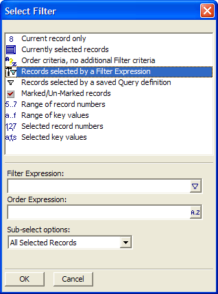

Special Queries
The Select Filter dialog box lets quickly perform one of several pre-defined queries. Special Queries include:
Current record only : Create a query that returns just one record - the current record.
Range of record numbers : Create a query that returns all of the records between a specified starting and ending record number.
Range of key values : Create a query that returns all records between a specified starting and ending key value. For example, if the current primary index is Lastname, you could specify a starting key of "Jones" and an ending key of "Kelly"
Selected record numbers : Create a query that returns records with specified record numbers. For example, 10, 23, 56, 123
Selected key values : Create a query that returns records with specified key values. For example, if the current primary index is Lastname, you could specify a query to return, "Jones, James, Johnson, Abrams".

Select Filter Dialog Box
To use the Special Queries:
Select Query > Special Queries.
When you select a query from the menu, additional record selection criteria will appear at the bottom of the dialog box.
When you finish specifying the query, click OK.